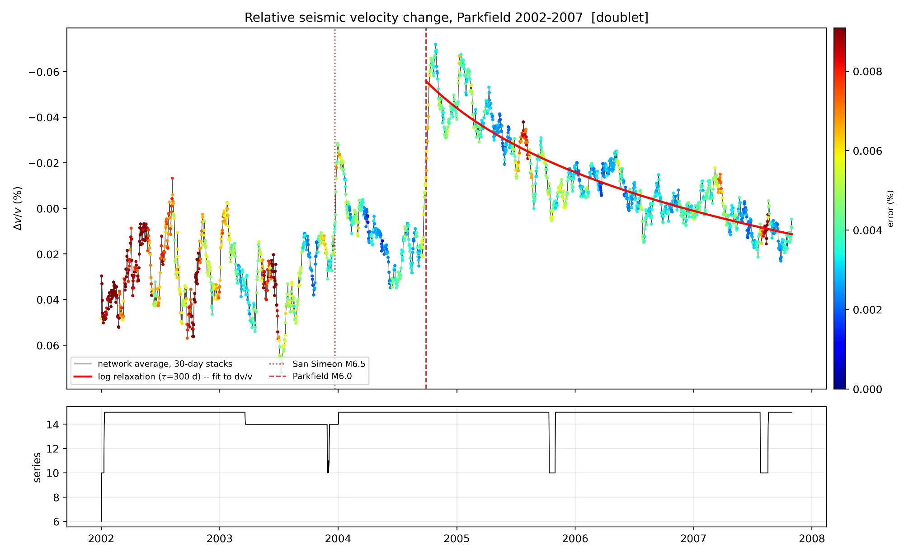
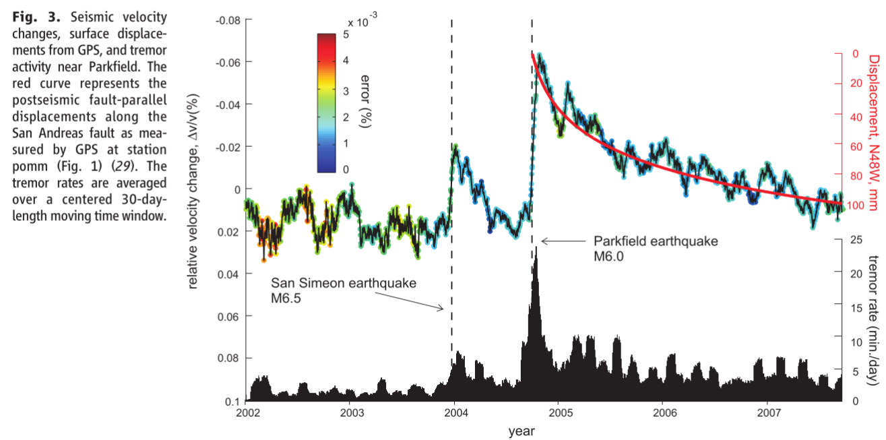

Research
ambient seismic noise · dv/v
so far
I'm pretty new to this field and still figuring things out.
I got into it after reading Brenguier et al. (2008, Nature Geoscience). They used just the background noise recorded by seismometers to track small changes in seismic velocity under Piton de la Fournaise volcano, and saw the velocity drop before eruptions. That's basically why I wanted to work on this.
thesis
For my master's thesis I wrote a dv/v workflow from scratch: downloading the raw data, cleaning it, cross-correlating, stacking, and finally measuring velocity changes. I tested it on the 2004 Parkfield earthquake, following Brenguier et al. (2008, Science), and seeing the coseismic drop show up in my own plot was a pretty great moment.



